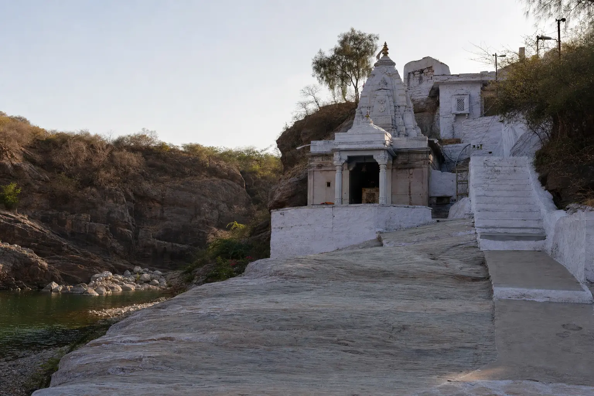

Agra To Govardhan TaxiParikrama, Radha Kund & Braj Darshan
85–95 KM Via Mathura
About 2 Hrs · Waiting Included

What You Are Actually Booking
On most Braj routes the cab takes you between temples. Govardhan is different: the reason people come is a circuit you walk, and it takes as long as it takes. So what this booking really buys is a driver who takes you the 85–95 km out, puts you down at the right place, stays put for however many hours you need, and is there at the far end. That is why the fare depends on your plan — and why we ask about it before quoting.
Agra To Govardhan Taxi At A Glance
85–95 KM
From Agra, Via Mathura
~2 HRS
Each Way By Cab
21–23 KM
Parikrama, On Foot
6:00 AM
Suggested Pickup Time
How The Parikrama Works With A Cab
- The Govardhan Parikrama is a roughly 21–23 km circuit around Govardhan Hill, completed on foot — or, for some pilgrims, by rolling prostration.
- The car cannot follow the path. We do not claim otherwise, and any service that does is describing something else.
- Your driver drops you at the Parikrama start point, waits at nearby parking or an agreed spot, and picks you up when you are done.
- Waiting is included within the booked day. A full Parikrama can take several hours depending on your pace, and that does not change the fare.
- Your luggage and belongings stay locked in the car while you walk, which is the practical reason most people book a private cab for this.
- Tell us your plan when booking so the pickup is timed properly rather than guessed.
 Your Bags Stay With The Car
Your Bags Stay With The Car
Taxi Fare From Agra To Govardhan
We do not publish a starting price for this route, and we would rather say so than post a number that changes once you tell us your plan. The fare depends on the cab, your pickup point and how long the car waits.
| Cab Type | Seats | Same-Day Round Trip |
|---|---|---|
| AC Sedan (Dzire / Amaze) | 4 | Fare on WhatsApp |
| AC SUV (Ertiga) | 6 | Fare on WhatsApp |
| AC SUV (Innova Crysta) | 7 | Fare on WhatsApp |
| Tempo Traveller | 12–15 | Fare on WhatsApp |
Your fixed fare covers fuel and driver charges, including waiting while you complete darshan or the Parikrama. Tolls and parking are paid by you at actuals, and every component is explained on WhatsApp before you confirm. See the full Agra taxi fare list for the routes we do publish prices for.
A Typical Day, And The Road Out
The Day In Order
- 6:00 am — pickup from your Agra hotel or home.
- 8:00 am — arrive Govardhan; begin the Parikrama or temple darshan.
- 12:00 noon — Radha Kund and Kusum Sarovar.
- 1:30 pm — lunch on the way back, or at Mathura.
- 5:00–6:00 pm — drop back at your Agra address.
The Road
 Agra To Govardhan Via Mathura
Agra To Govardhan Via Mathura
- Govardhan sits in the Braj region of Uttar Pradesh, 85–95 km from Agra via Mathura.
- The cab takes the Agra–Mathura highway and continues on towards Govardhan — about 2 hours each way, depending on traffic near Mathura.
- Pickup from any Agra address — hotel, home, Agra Cantt or Kheria Airport.
What The Day Usually Covers
Govardhan Hill
The sacred hill at the centre of the Parikrama, revered as the mountain Lord Krishna lifted. Several temples line the base of the hill, so there is darshan to be had whether or not you walk the full circuit.
Radha Kund
A pair of sacred ponds associated with Radha and Krishna, a short drive from Govardhan and a quiet stop for many pilgrims.
Kusum Sarovar
A carved sandstone ghat and cenotaph complex near Govardhan, worth the stop for the architecture and the calm.
Gokul, Barsana & Mathura
Optional add-ons if your schedule allows. Tell us what you want to cover and we will say honestly whether it fits in one day or is better split across two.
Clear Fare Breakdown
What Your Govardhan Booking Includes
One cab and one driver for the day, at a price agreed before you leave Agra.
Included In The Fare
- Private AC Cab — Not Shared
- Fuel And Driver Charges
- Waiting Within The Booked Day
- Door-To-Door Agra Pickup And Drop
- Belongings Locked In The Car While You Walk
- Driver Name, Number And Car Number Before Pickup
Paid Separately By You
- Highway Tolls, At Actuals
- Parking At Temples And The Parikrama Start
- Meals, Entry Tickets And Offerings
Why Book Govardhan With Us
Braj Route Experience
Our drivers run Govardhan, Radha Kund, Kusum Sarovar and the wider Braj circuit regularly, and know where you can actually stop and wait.
Parikrama-Timed Planning
The pickup point and time are planned around your walking pace, not a fixed schedule that leaves you hurrying the last few kilometres.
Waiting Is In The Fare
No waiting charge within the booked day. A slow Parikrama does not turn into a bigger bill.
The Fare Is In Writing
One price confirmed on WhatsApp before you travel, with tolls and parking identified separately rather than added at the end.
Driver Details Before Pickup
Name, mobile number and car registration number come through before the car arrives. Match the plate before you board.
Flexible Braj Add-Ons
Combine with Mathura, Vrindavan, Barsana or Gokul on request — and we will tell you if it does not fit in a day.
Booking Your Govardhan Cab
01 — Tell Us The Plan
Travel date, passengers, pickup point, and whether you intend the full Parikrama. That last answer is what decides the fare.
02 — Fixed Fare Confirmed
We confirm the fare in writing on WhatsApp, including expected tolls and parking. No advance is needed for most bookings.
03 — Driver Details Shared
Name, mobile number and car number before pickup — match the plate before you board.
Govardhan As Part Of A Bigger Braj Day
Govardhan on its own is quoted on WhatsApp, but the combinations are published as full-day tour packages — Mathura, Vrindavan and Govardhan together, or all four Braj towns with Barsana added. If that is closer to what you want, the tour page has the fares by cab type.
Mathura + Vrindavan + Govardhan
The published three-town package, priced by cab type on the tour page.
₹3,500 full dayMathura, Vrindavan & Barsana
The other three-town day, with the Radha Rani hill instead of Govardhan.
₹3,500 full dayAgra to Gokul & Nandgaon
Krishna’s childhood villages, on custom Braj Yatra routes.
Fare on WhatsAppLocal Agra Operator
Your Local Travel Partner In Agra
Padma Shree Travels operates from Shamsabad, Agra, running local sightseeing, station and airport transfers, pilgrimage trips and outstation routes. The rest of the Braj circuit is run separately — Mathura, Vrindavan, Barsana and Gokul and Nandgaon.
- Your fare Fares are confirmed on WhatsApp before you travel, with tolls and parking identified separately.
- Your driver Your driver’s name, mobile number and car registration number are shared before pickup.
- Pickup and drop Pickup from any Agra address — hotel, home, Agra Cantt or Kheria Airport — and drop back at the same place.
Direct WhatsApp and phone support before and during your trip.
.jpg)
Agra To Govardhan Taxi — Questions & Answers
How far is Govardhan from Agra?
Govardhan is approximately 85 to 95 km from Agra via Mathura, which is about 2 hours each way by private taxi depending on traffic around Mathura.
What is the taxi fare from Agra to Govardhan?
We do not publish a fixed starting price for this route, because the fare depends on your cab type, your pickup point and how long you need the car to wait. A same-day round trip is available in an AC sedan, with Ertiga, Innova and Tempo Traveller options for larger groups. Message us on WhatsApp and we confirm the fare in writing. Tolls and parking are extra at actuals and told to you before you book.
Can the taxi wait while we do the Govardhan Parikrama?
Yes, and waiting is included within the booked day. The Govardhan Parikrama is a roughly 21 to 23 km walking circuit around the hill, so the car cannot follow the full path. Your driver drops you at the Parikrama start point, waits nearby or at an agreed spot, and picks you up at the end. Tell us your plan when booking so we can time the pickup properly, because a full Parikrama can take several hours depending on your pace.
What time do we need to start from Agra?
A 6:00 am pickup from Agra puts you at Govardhan around 8:00 am, which leaves the whole morning for the Parikrama or temple darshan and still gets you back to Agra by about 5:00 to 6:00 pm. If you are walking the full circuit, starting earlier is better.
What else can we see near Govardhan?
Radha Kund and Kusum Sarovar are both close by and easy to combine with Govardhan in the same day. Gokul, Barsana and Mathura can also be added if you have more time.
Can we combine Govardhan with Mathura and Vrindavan?
Yes. Many families combine Govardhan with a wider Braj darshan covering Mathura and Vrindavan, and that combination is published as a full-day tour package rather than as a Govardhan trip. Tell us on WhatsApp what you want to cover and we will plan a realistic one-day route or suggest splitting it across two days.
Is the trip suitable for senior citizens?
Yes, with the right planning. The full Parikrama on foot can be tiring for elderly travellers, so we can suggest a shorter darshan plan instead. Tell us on WhatsApp who is travelling and we will plan accordingly.
Other Braj Routes From Agra
Agra to Mathura Taxi
Krishna Janmabhoomi, Dwarkadhish and the ghats.
From ₹1,500 one wayAgra to Vrindavan Cab
Banke Bihari, Prem Mandir and ISKCON.
From ₹1,800 one wayMathura + Vrindavan Full Day
Both towns in one planned day out of Agra.
₹3,000 full dayTemple Tours From Agra
Every pilgrimage route we run, Braj and Rajasthan.
View pilgrimage routesAgra Local Sightseeing
Taj Mahal, Agra Fort and Akbar’s Tomb — a full day in the city.
From ₹2,500Full Agra Taxi Fare List
Every route and package we run, with fares in one place.
All faresPlanning The Parikrama?
Fare in writing. Waiting included. Pickup timed to your pace.
Tell us your travel date, how many are coming and whether you intend the full circuit — we confirm the fare and the plan before you leave Agra.
Free cancellation up to 12 hours before departure.